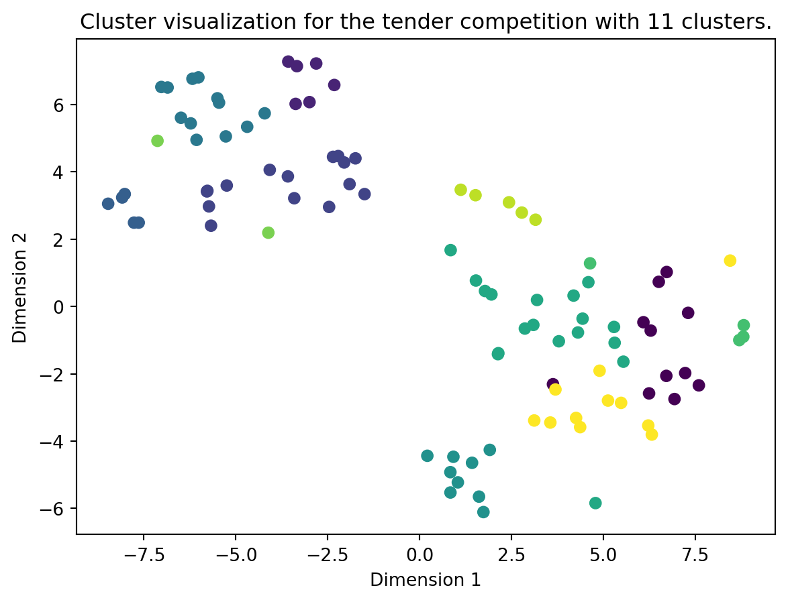
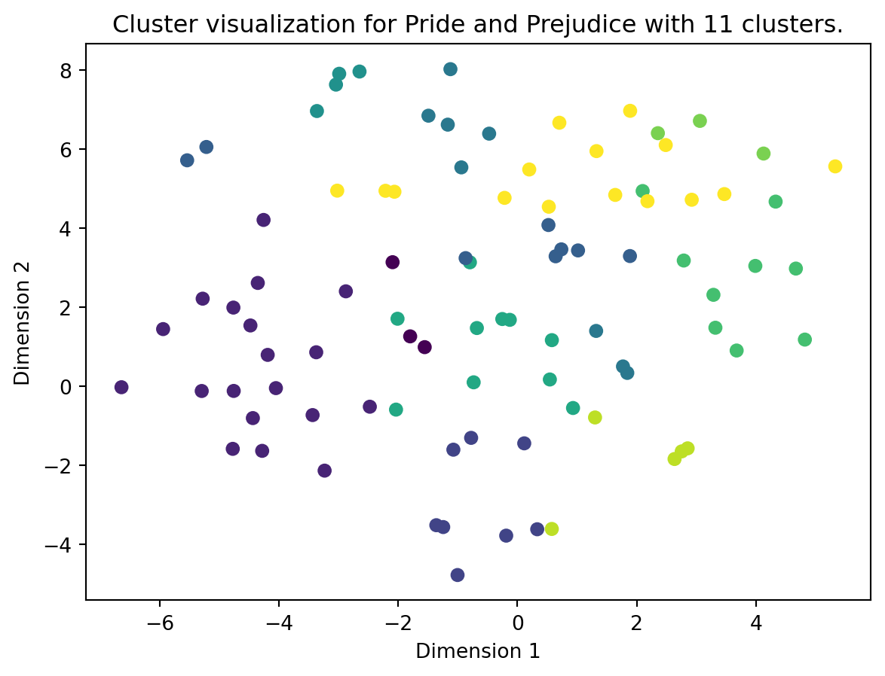

Code
from dotenv import load_dotenv
from utils import read_files, split_document_by_tokens
from pathlib import Path
import os
load_dotenv()
OPENAI_API_KEY = os.getenv('OPENAI_API_KEY')When you reach a certain length of text to summarize, the other methods become too expensive or are not able to summarize well enough. We need to find a way to extract all the important parts of large texts like books or very big documents, and create a summary from them.
Some simple ways to avoid using all the chunks for summarization is either randomly selecting chunks, or spacing out which chunks are selected. But what if we miss out on an important part of the text while doing this?
A solution is K-means clustering, where each chunk is embedded, and then clusters are formed based on semantic meaning of those chunks. Then a summary is formed from each cluster, hopefully netting us a more accurate summary of huge texts.
Another advantage is the amount of requests sent to the API. While Map Reduction sends many requests, clustering will send only one request, saving a lot of money.
Let’s implement this method to summarize many documents or whole books!
First, we need to import some packages and load in our OpenAI API key, since we will be using OpenAI’s GPT models.
from dotenv import load_dotenv
from utils import read_files, split_document_by_tokens
from pathlib import Path
import os
load_dotenv()
OPENAI_API_KEY = os.getenv('OPENAI_API_KEY')Next, we will load in our documents. Let’s load in a whole tender competition and a whole book (Pride and Prejudice).
anbudskonkurranse = read_files(Path('./content/nord-universitet'))
anbudskonkurranse_filnavn = [doc.metadata["source"] for doc in anbudskonkurranse]
print("Tender competition documents:\n")
for konk in anbudskonkurranse_filnavn:
print(konk)
books = read_files(Path("./content/books/"))
pride_and_prejudice = books[0]
print("\nBook:\n")
print(pride_and_prejudice.metadata["source"])Tender competition documents:
content/nord-universitet/Vedlegg_4_Profilhandbok-Nord-universitet.pdf
content/nord-universitet/Vedlegg_5.B_databehandleravtale_bilag_2020.docx
content/nord-universitet/Vedlegg_3_CMS-anbefaling-Leveranse-Nord-universitet.pdf
content/nord-universitet/Vedlegg_2_Analyse-og-evaluering-Leveranse-Nord-universitet.pdf
content/nord-universitet/ssa-v_bilag_2018_bok (1).docx
content/nord-universitet/ssa-v_generell_avtaletekst_2018_bok (2).docx
content/nord-universitet/ssa-t-bilag-2.docx
content/nord-universitet/Vedlegg_1_FS-integrasjon.pdf
content/nord-universitet/Vedlegg_5.A_dba_generell_avtaletekst_2020_no.docx
content/nord-universitet/Vedlegg_6_Retningslinjer-for-www-nord-no-vedtatt-februar-2021.pdf
content/nord-universitet/ssa-t_generell-avtaletekst-2018-bok.docx
content/nord-universitet/ssa-v-bilag-2.docx
content/nord-universitet/ssa-t_bilag_2018_bok.docx
content/nord-universitet/Vedlegg_7_Prisskjema.xlsx
content/nord-universitet/KONKURRANSEGRUNNLAG.docx
Book:
content/books/pride_and_prejudice.pdfLet’s see how many tokens are in our documents!
from langchain_openai import ChatOpenAI
from langchain.schema import Document
llm = ChatOpenAI(openai_api_key=OPENAI_API_KEY, model="gpt-3.5-turbo")
tender_content = ""
for doc in anbudskonkurranse:
tender_content += doc.page_content
tender_documents = Document(page_content=tender_content)
num_tokens_tender = llm.get_num_tokens(tender_documents.page_content)
print(f"Number of tokens in tender competition documents: {num_tokens_tender}")
num_tokens_book = llm.get_num_tokens(pride_and_prejudice.page_content)
print(f"Number of tokens in book: {num_tokens_book}")Number of tokens in tender competition documents: 137133
Number of tokens in book: 160831That’s a lot of tokens. If we were to use map reduction, sending all these tokens to the LLM would be pretty expensive. If we were using document stuffing, we might not be able to fit the document(s) at all!
To better facilitate clustering, let’s split our documents into more manageable sizes, called chunks. There are many different ways to chunk a document, the easiest being to split on specific characters, like punctuation marks. Another method is to chunk on token count, this can be nice because you know how many tokens you’re sending to the LLM with each chunk.
Let’s try with token chunking.
split_tender_competition = split_document_by_tokens(anbudskonkurranse, chunk_size=2000, overlap=200)
split_book = split_document_by_tokens([pride_and_prejudice], chunk_size=2000, overlap=200)
print(f"Now our tender competition is split up into {len(split_tender_competition)} documents")
print(f"And our book is split up into {len(split_book)} documents")Now our tender competition is split up into 98 documents
And our book is split up into 92 documentsClustering relies on embeddings to work. Embeddings are vector representations of text, so that LLMs can work with them (LLMs don’t understand human readable text, they understand numbers). Similar pieces of text will be closer together in the vector space, therefore the hope is that we can “cluster” pieces of text with similar meaning together, because they are closer together in the vector space.
from langchain_openai import OpenAIEmbeddings
embeddings = OpenAIEmbeddings(openai_api_key=OPENAI_API_KEY, model="text-embedding-3-small")
tender_vectors = embeddings.embed_documents([doc.page_content for doc in split_tender_competition])
book_vectors = embeddings.embed_documents([doc.page_content for doc in split_book])from sklearn.manifold import TSNE
import matplotlib.pyplot as plt
import numpy as np
def plot_clusters(vectors, title, algo = None, ):
tsne = TSNE(n_components=2, random_state=42)
vectors = np.array(vectors)
reduced_data_tsne = tsne.fit_transform(vectors)
if algo:
plt.scatter(reduced_data_tsne[:, 0], reduced_data_tsne[:, 1], c=algo.labels_)
else:
plt.scatter(reduced_data_tsne[:, 0], reduced_data_tsne[:, 1])
plt.xlabel('Dimension 1')
plt.ylabel('Dimension 2')
plt.title(f'Cluster visualization for {title}.')
plt.show()Let’s try to visualize how our chunks look in the vector space. Please note that the embedding vectors have 1536 dimensions, and here we have squished them down to two dimension, so a lot of information will be lost. Perhaps some clustering of chunks would be easier to see with more dimensions.
plot_clusters(vectors=book_vectors, title="Pride and Prejudice")
plot_clusters(vectors=tender_vectors, title="the tender competition")

K-means clustering is an algorithm which starts by randomly initializing the centroids of a given amount of clusters (k). A centroid is one datapoint in the center of a cluster. It then iterates through two main steps: assignment and update.
In the assignment step, each data point is assigned to the closest centroid based on a distance metric, typically Euclidean distance. In the update step, the centroids are recalculated as the mean of all data points assigned to each cluster.
This process repeats until the centroids no longer move significantly, indicating convergence. The result is a grouping of data points such that points in the same cluster are more similar to each other than to those in other clusters, based on the chosen distance metric.
Note that K-means takes the amount of clusters as a parameter. For now, we’ll set it manually.
from sklearn.cluster import KMeans
num_clusters = 11
tender_kmeans = KMeans(n_clusters=num_clusters, random_state=42).fit(tender_vectors)
book_kmeans = KMeans(n_clusters=num_clusters, random_state=42).fit(book_vectors)Now let’s visualize our clusters:
plot_clusters(vectors=tender_vectors, algo=tender_kmeans, title="the tender competition with 11 clusters")
plot_clusters(vectors=book_vectors, algo=book_kmeans, title="Pride and Prejudice with 11 clusters")

This looks alright, especially the tender competition has some clear clusters. However, how can we know that we have chosen the correct amount of clusters for our K-means algorithm?
Silhouette scoring is a method used to assess the quality of clusters when using for example K-means. The silhouette score for each data point is calculated based on two factors: - The average distance between the data point and all other points in the same cluster (cohesion) - The average distance between the data point and all points in the nearest cluster to which the data point does not belong (separation).
We find the silhouette score for one data point by taking the difference between these two distances, normalized by the maximum of the two. This score ranges from -1 to 1, where a score close to 1 indicates that the data point clearly belongs to its own cluster, a score near 0 indicates that the point is on the border of two clusters, and a score near -1 suggests that the point may have been assigned to the wrong cluster. The overall silhouette score of the clustering is the average of the silhouette scores of all the data points.
So what we can do is try many different values of k and find the silhouette score for each one, then choose the best scoring k as our cluster amount, where the score closest to 1 is best.
from sklearn.metrics import silhouette_score
def find_optimal_clusters(vectors, max_k):
score = -1
best_n_clusters = 0
for k in range(3, max_k):
kmeans = KMeans(n_clusters=k, random_state=1).fit_predict(vectors)
new_score = silhouette_score(vectors, kmeans)
if new_score > score:
best_n_clusters = k
score = new_score
print(f"For n_clusters = {k}, silhouette score is {new_score})")
print(f"Best number of clusters is {best_n_clusters}")
return best_n_clustersLet’s find the optimal number of cluster for our tender competition:
tender_num_clusters = find_optimal_clusters(tender_vectors, max_k=20)
tender_kmeans = KMeans(n_clusters=tender_num_clusters, random_state=1).fit(tender_vectors)
plot_clusters(vectors=tender_vectors, algo=tender_kmeans, title=f"our tender competition with {tender_num_clusters} clusters")For n_clusters = 3, silhouette score is 0.16319734949495834)
For n_clusters = 4, silhouette score is 0.13677655311745174)
For n_clusters = 5, silhouette score is 0.13867432915900288)
For n_clusters = 6, silhouette score is 0.11354961404064279)
For n_clusters = 7, silhouette score is 0.10669988485818448)
For n_clusters = 8, silhouette score is 0.10039881578450706)
For n_clusters = 9, silhouette score is 0.0775684824083643)
For n_clusters = 10, silhouette score is 0.07354397576934713)
For n_clusters = 11, silhouette score is 0.0896860457734401)
For n_clusters = 12, silhouette score is 0.09227585159583783)
For n_clusters = 13, silhouette score is 0.09388758282715984)
For n_clusters = 14, silhouette score is 0.09267778721302193)
For n_clusters = 15, silhouette score is 0.09460706544627888)
For n_clusters = 16, silhouette score is 0.0869772390044283)
For n_clusters = 17, silhouette score is 0.09299719039273895)
For n_clusters = 18, silhouette score is 0.10369596708641589)
For n_clusters = 19, silhouette score is 0.10545737216311063)
Best number of clusters is 3
And then for our book:
book_num_clusters = find_optimal_clusters(book_vectors, max_k=20)
book_kmeans = KMeans(n_clusters=book_num_clusters, random_state=1).fit(book_vectors)
plot_clusters(vectors=book_vectors, algo=book_kmeans, title=f"Pride and Prejudice with {book_num_clusters} clusters")For n_clusters = 3, silhouette score is 0.047733092427202854)
For n_clusters = 4, silhouette score is 0.051067859191365084)
For n_clusters = 5, silhouette score is 0.05523242135225988)
For n_clusters = 6, silhouette score is 0.0465462151274959)
For n_clusters = 7, silhouette score is 0.030455545138270337)
For n_clusters = 8, silhouette score is 0.03968968584609667)
For n_clusters = 9, silhouette score is 0.03900376290198097)
For n_clusters = 10, silhouette score is 0.0393203646925307)
For n_clusters = 11, silhouette score is 0.041871536535647465)
For n_clusters = 12, silhouette score is 0.04602273803755732)
For n_clusters = 13, silhouette score is 0.04664794070136)
For n_clusters = 14, silhouette score is 0.04450307354685479)
For n_clusters = 15, silhouette score is 0.037468937738576666)
For n_clusters = 16, silhouette score is 0.036899065375207624)
For n_clusters = 17, silhouette score is 0.04084609100393472)
For n_clusters = 18, silhouette score is 0.04017819773375103)
For n_clusters = 19, silhouette score is 0.039037963267425264)
Best number of clusters is 5
Now for the final piece of the puzzle. We have the clusters, now what? Let’s find the chunk which sits closest to the center of each cluster.
def get_key_chunks(vectors, alg, num_clusters, documents):
closest_indices = []
for i in range(num_clusters):
distances = np.linalg.norm(vectors - alg.cluster_centers_[i], axis=1)
closest_index = np.argmin(distances)
closest_indices.append(closest_index)
selected_indices = sorted(closest_indices)
selected_docs = [documents[doc] for doc in selected_indices]
return selected_docsThe centroid chunks will be used as the “average” chunk for each cluster, hopefully giving us a solid idea of what the entire cluster is talking about.
Now that we have the chunks, let’s do some good old map reduction on them:
from langchain import PromptTemplate
from langchain.chains.summarize import load_summarize_chain
llm4 = ChatOpenAI(openai_api_key=OPENAI_API_KEY, model="gpt-4-turbo")
map_prompt = """
You will be given a piece of a larger text. This piece of text will be enclosed in triple backticks (```).
Your job is to give a summary of this piece of text so that the reader will have a full understanding of what the text is about.
Your response should be at least three paragraphs and fully encompass what was written in the piece of text.
```{text}```
FULL SUMMARY:
"""
map_prompt_template = PromptTemplate(template=map_prompt, input_variables=["text"])
map_chain = load_summarize_chain(llm=llm, chain_type="stuff", prompt=map_prompt_template)We once again start with the tender competition:
summary_list = []
selected_tender_docs = get_key_chunks(tender_vectors, tender_kmeans, tender_num_clusters, split_tender_competition)
for i, doc in enumerate(selected_tender_docs):
chunk_summary = map_chain.run([doc])
summary_list.append(chunk_summary)
print(f'Summary #{i} - Preview: {chunk_summary[:250]} \n')
tender_summaries = "\n".join(summary_list)
tender_summaries = Document(page_content=tender_summaries)
print(f'All your summaries together are {llm.get_num_tokens(tender_summaries.page_content)} tokens')Summary #0 - Preview: The text discusses the need for the university's website to be more visually appealing and user-friendly while still maintaining a sense of creativity. It emphasizes the importance of standing out among other universities by daring to have a clear pe
Summary #1 - Preview: The piece of text provided outlines various important clauses and terms within a contractual agreement. It emphasizes the importance of confidentiality, stating that both parties must maintain confidentiality even after the agreement has ended. Emplo
Summary #2 - Preview: The piece of text provided outlines the requirements for a Content Management System (CMS) solution for Nord University. It emphasizes the importance of having a solution that can efficiently manage broken links, redirects, user-friendly interfaces,
All your summaries together are 801 tokensAnd then, finally, we combine the summaries.
combine_prompt = """
You will now be given a series of summaries from a larger text. The summaries will be enclosed in triple backticks(```).
Your goal is to give a summary of what happened in the greater piece of text.
The reader should be able to grasp what the full text is about from your summary.
```{text}```
SUMMARY:
"""
combine_prompt_template = PromptTemplate(template=combine_prompt, input_variables=["text"])
reduce_chain = load_summarize_chain(llm=llm4, chain_type="stuff", prompt=combine_prompt_template)import textwrap
tender_output = reduce_chain.run([tender_summaries])
textwrap.wrap(text=tender_output, width=100, replace_whitespace=False)["The larger text primarily discusses the enhancement and management of Nord University's digital",
'presence, focusing on three key areas: website design and user experience, contractual obligations',
'and terms for services, and specifications for a Content Management System (CMS). \n\nFirstly, the',
"text outlines the importance of redesigning the university's website to be more visually appealing,",
"user-friendly, and accessible, while emphasizing the institution's unique qualities and research",
'activities. It suggests improvements such as simplifying language, using engaging content, and',
'ensuring universal design to attract potential students and researchers.\n\nSecondly, the text delves',
'into detailed contractual terms and conditions between parties, stressing the significance of',
'confidentiality, compensation specifics, payment terms, legal compliance, and security measures.',
'This section provides a comprehensive overview of the expectations and responsibilities to ensure',
'smooth contractual relationships.\n\nLastly, the text specifies requirements for a CMS solution',
'tailored for Nord University. It emphasizes functionalities like managing broken links, user',
'authentication, profile management, workflow processes, and document accessibility to enhance',
"content management and user experience on the university's digital platforms.\n\nOverall, the text",
"serves as a guide to improving and managing various aspects of Nord University's digital strategy to",
'better serve its community and stakeholders.']Lastly, let’s repeat that process for Pride and Prejudice:
summary_list = []
selected_book_docs = get_key_chunks(book_vectors, book_kmeans, book_num_clusters, split_book)
for i, doc in enumerate(selected_book_docs):
chunk_summary = map_chain.run([doc])
summary_list.append(chunk_summary)
print(f'Summary #{i} - Preview: {chunk_summary[:250]} \n')
book_summaries = "\n".join(summary_list)
book_summaries = Document(page_content=book_summaries)
print(f'All your summaries together are {llm.get_num_tokens(book_summaries.page_content)} tokens')Summary #0 - Preview: The piece of text revolves around a discussion between Elizabeth and another character (likely Jane) regarding Mr. Bingley's behavior and relationships. Elizabeth expresses her belief that Mr. Bingley's actions are not driven by design but rather by
Summary #1 - Preview: In this piece of text, the characters Elizabeth, Mrs. Gardiner, and others are discussing Mr. Darcy's behavior and character. Mrs. Gardiner expresses surprise at Darcy's treatment of Mr. Wickham, noting his pleasant appearance but questioning his act
Summary #2 - Preview: The enclosed text depicts a conversation between Elizabeth and her family regarding the elopement of Lydia with Wickham. Elizabeth expresses concerns about Lydia's lack of moral values and upbringing, attributing her actions to her youth, frivolous l
Summary #3 - Preview: In this piece of text, we see Elizabeth Bennet feeling disappointed and hurt by Mr. Darcy's behavior when they meet again after some time. Despite her attempts to engage him in conversation, Mr. Darcy remains silent and distant, causing Elizabeth to
Summary #4 - Preview: In this piece of text, we see a scene where Jane Bennet's engagement to Mr. Bingley is announced and celebrated by her family. Mrs. Bennet is ecstatic and expresses her happiness at the match, believing Jane to be the luckiest and most beautiful of h
All your summaries together are 1593 tokensbook_output = reduce_chain.run([book_summaries])
textwrap.wrap(text=book_output, width=100, replace_whitespace=False)['The overarching narrative encapsulated in the text pieces revolves around the intricate social',
'dynamics and emotional developments primarily within the Bennet family from Jane Austen\'s "Pride and',
'Prejudice." The story threads highlight delicate conversations and evolving relationships influenced',
'by societal norms, romantic entanglements, and personal values.\n\nCentral to the narrative is',
'Elizabeth Bennet, whose astute observations and interactions with characters like Mr. Bingley, Mr.',
'Darcy, and her own family members drive much of the plot. Discussions often revolve around the',
"complexities of relationships, such as Mr. Bingley's fluctuating attentions and Mr. Darcy's",
'seemingly aloof but complex disposition, which Elizabeth tries to decipher. Key events, such as Mr.',
"Bingley's behavior towards Jane Bennet, Lydia Bennet's reckless elopement with Mr. Wickham, and the",
'unexpected visit from Lady Catherine de Bourgh, catalyze shifts in these relationships and societal',
"perceptions.\n\nThe narrative captures the tension and excitement surrounding Jane Bennet's engagement",
"to Mr. Bingley, juxtaposed with Elizabeth's personal turmoil in understanding her feelings towards",
'Mr. Darcy amidst societal and familial expectations. The text also explores themes of morality,',
'reputation, and personal growth as characters navigate the challenges posed by their desires,',
'obligations, and the prevailing social etiquette.\n\nOverall, the text pieces collectively portray the',
'emotional landscape and social intricacies of early 19th-century England through the lens of the',
"Bennet family's experiences, focusing on romance, social status, and personal integrity."]And that’s it!